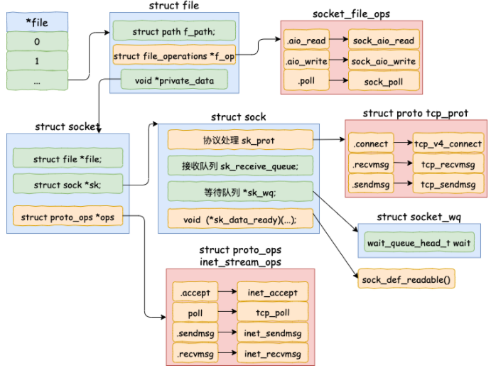
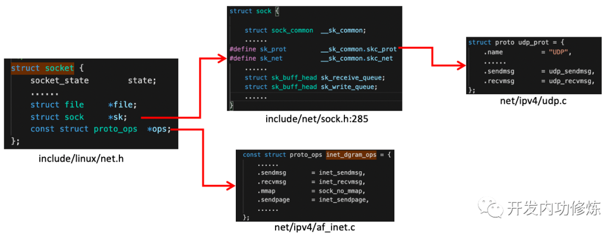
struct socket中的const struct proto_ops*对应的是协议的方法集合。每个协议都会实现不同的方法集，对于IPv4 Internet协议族来说,每种协议都有对应的处理方法，如下。对于udp来说，是通过inet_dgram_ops来定义的，其中注册了inet_recvmsg方法。
//file: net/ipv4/af_inet.c
const struct proto_ops inet_stream_ops = {
......
.recvmsg = inet_recvmsg,
.mmap = sock_no_mmap,
......
}
const struct proto_ops inet_dgram_ops = {
......
.sendmsg = inet_sendmsg,
.recvmsg = inet_recvmsg,
......
}
struct socket中的另一个数据结构struct sock *sk是一个非常大，非常重要的子结构体。其中的sk_prot又定义了二级处理函数。对于UDP协议来说，会被设置成UDP协议实现的方法集udp_prot。
//file: net/ipv4/udp.c
struct proto udp_prot = {
.name = "UDP",
.owner = THIS_MODULE,
.close = udp_lib_close,
.connect = ip4_datagram_connect,
......
.sendmsg = udp_sendmsg,
.recvmsg = udp_recvmsg,
.sendpage = udp_sendpage,
......
}
struct socket 对象中有一个重要的成员 - file 内核对象指针。这个指针初始化的时候是空的。在 accept() 方法里会调用 sock_alloc_file() 来申请内存并初始化。
Reference:
recvfrom() system callrecvfrom()是一个glibc的库函数，该函数在执行后会将用户进行陷入到内核态，进入到Linux实现的系统调用sys_recvfrom()。sys_revvfrom的实现过程如下：
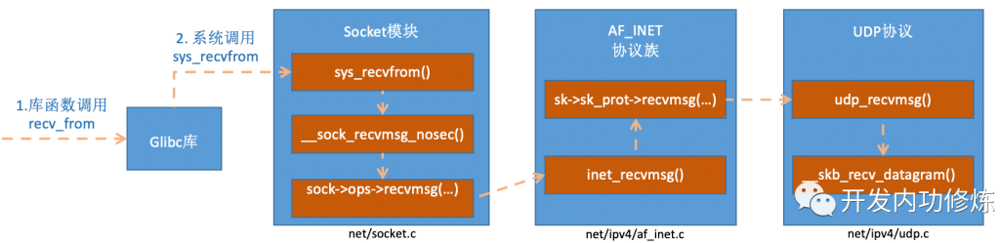
在inet_recvmsg调用了sk->sk_prot->recvmsg。
//file: net/ipv4/af_inet.c
int inet_recvmsg(struct kiocb *iocb, struct socket *sock, struct msghdr *msg,size_t size, int flags){
......
// 对于udp协议的socket来说，这个sk_prot就是net/ipv4/udp.c下的struct proto udp_prot。由此我们找到了udp_recvmsg方法。
err = sk->sk_prot->recvmsg(iocb, sk, msg, size, flags & MSG_DONTWAIT,
flags & ~MSG_DONTWAIT, &addr_len);
if (err >= 0)
msg->msg_namelen = addr_len;
return err;
}
//file:net/core/datagram.c:
EXPORT_SYMBOL(__skb_recv_datagram);
struct sk_buff *__skb_recv_datagram(struct sock *sk, unsigned int flags,int *peeked, int *off, int *err){
......
// 读取过程，就是访问sk->sk_receive_queue。如果没有数据，且用户也允许等待，则将调用wait_for_more_packets()执行等待操作，它加入会让用户进程进入睡眠状态。
do {
struct sk_buff_head *queue = &sk->sk_receive_queue;
skb_queue_walk(queue, skb) {
......
}
/* User doesn't want to wait */
error = -EAGAIN;
if (!timeo)
goto no_packet;
} while (!wait_for_more_packets(sk, err, &timeo, last));
}
recv() system callRefer to： https://mp.weixin.qq.com/s/cIcw0S-Q8pBl1-WYN0UwnA
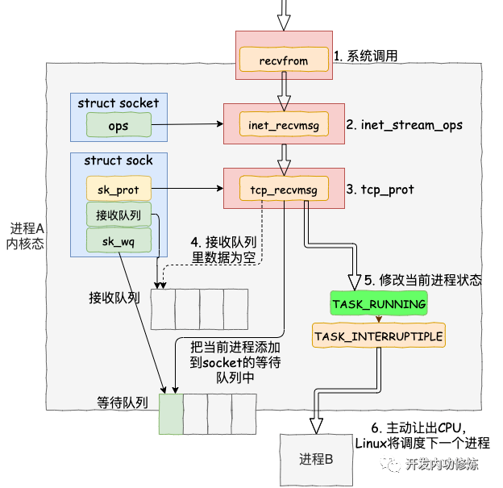
recv() system call.socket->ops->recvmsg function pointer points to inet_recvmsg (defined in net/ipv4/af_inet.c).sock->sk_prot->recvmsg points to tcp_recvmsg (defined in net/ipv4/tcp.c).tcp_recvmsg(), skb_queue_walk() loops the socket recv queuesk_wait_data() 把当前进程阻塞掉。sk_wait_event() 让出 CPU，进程将进入睡眠状态，这会导致一次进程上下文的开销。Details steps of step 5: 再来详细看下 sk_wait_data() 是怎么把当前进程给阻塞掉的。
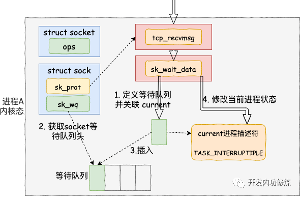
//file: net/core/sock.c
int sk_wait_data(struct sock *sk, long *timeo)
{
//当前进程(current)关联到所定义的等待队列项上
DEFINE_WAIT(wait);
// 调用 sk_sleep 获取 sock 对象下的 wait
// 并准备挂起，将进程状态设置为可打断 INTERRUPTIBLE
prepare_to_wait(sk_sleep(sk), &wait, TASK_INTERRUPTIBLE);
set_bit(SOCK_ASYNC_WAITDATA, &sk->sk_socket->flags);
// 通过调用schedule_timeout让出CPU，然后进行睡眠
rc = sk_wait_event(sk, timeo, !skb_queue_empty(&sk->sk_receive_queue));
...
DEFINE_WAIT 宏下，定义了一个等待队列项 wait。在这个新的等待队列项上，注册了回调函数 autoremove_wake_function，并把当前进程描述符 current 关联到其 .private成员上。sk_sleep 获取 sock 对象的等待队列列表头 sock.socket_wq (of type wait_queue_head_t*)prepare_to_wait 来把新定义的等待队列项 wait 插入到 sock.socket_wq.这样后面当内核收完数据产生就绪时间的时候，就可以查找 socket 等待队列上的等待项，进而就可以找到回调函数和在等待该 socket 就绪事件的进程了。
Refer to this section for how softirq delivers the packet to socket recv queue and wake up the process for receiving.
为了解决频繁中断带来的性能开销，Linux 内核在 2.6 版本中引入了NAPI 机制，它是混合「中断和轮询」的方式来接收网络包，它的核心概念就是不采用中断的方式读取数据，而是首先采用中断唤醒数据接收的服务程序，然后 poll 的方法来轮询数据。The design of NAPI allows the driver to go into a polling mode instead of being hard-interrupted for every required packet receive.
In summary:
netif_rx_schedule注册 poll, clear the hard IRQ, and raise a soft IRQ (NET_RX_SOFTIRQ)struct sk_buff 缓冲区中，从而可以作为一个网络包交给网络协议栈进行逐层处理。收到的包送到协议栈注册的ip_rcv函数中ip_rcv函数再讲包送到udp_rcv函数中（对于tcp包就送到tcp_rcv）netdev_budget_usecs have elapsed or netdev_budget has been reached.
net.core.netdev_budget: Maximum number of packets received in one NAPI polling cycle, total for all interfaces/CPUs.net.core.netdev_budget_usecs: Time in microseconds of one NAPI polling cycle.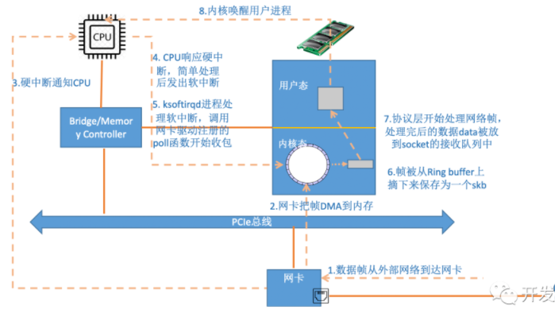
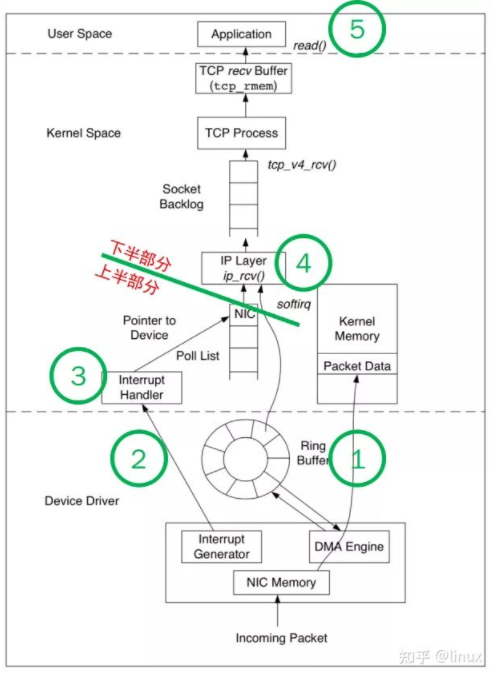
Before everything starts, the initialization of the softIRQ system is as follows:
softnet_data structures are created, one per CPU. These structures hold references to important data structures for processing network data. One we’ll see again is the poll_list. The poll_list is where NAPI poll worker structures will be added by napi_schedule() or other NAPI APIs from device drivers.net_dev_init then registers the NET_RX_SOFTIRQ softirq with the handler function called net_rx_action. This is the function the softirq kernel threads will execute to process packets.首先当数据帧从网线到达网卡上的时候，第一站是网卡的接收队列。网卡在分配给自己的RingBuffer中寻找可用的内存位置，找到后DMA引擎会把数据DMA到内存里。
当DMA操作完成以后，网卡会像CPU发起一个硬中断，通知CPU有数据到达。例子里网卡的硬中断注册的处理函数是igb_msix_ring。Linux在硬中断里只完成简单必要的工作，剩下的大部分的处理都是转交给软中断的。
//file: drivers/net/ethernet/intel/igb/igb_main.c
static irqreturn_t igb_msix_ring(int irq, void *data){
struct igb_q_vector *q_vector = data;
//...
napi_schedule(&q_vector->napi);
return IRQ_HANDLED;
}
/* Called with irq disabled */
static inline void ____napi_schedule(struct softnet_data *sd,
struct napi_struct *napi){
// list_add_tail修改了CPU变量softnet_data里的poll_list，将驱动napi_struct传过来的poll_list添加了进来。
// poll_list是一个双向列表，其中的设备都带有输入帧等着被处理。
list_add_tail(&napi->poll_list, &sd->poll_list);
__raise_softirq_irqoff(NET_RX_SOFTIRQ);
}
//file: include/linux/irq_cpustat.h
void __raise_softirq_irqoff(unsigned int nr){
trace_softirq_raise(nr);
or_softirq_pending(1UL << nr);
}
// 写入标记 "NET_RX_SOFTIRQ"
#define or_softirq_pending(x) (local_softirq_pending() |= (x))
ksoftirqd内核线程处理软中断
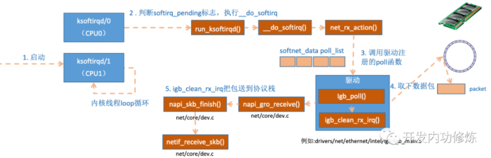
static int ksoftirqd_should_run(unsigned int cpu){
return local_softirq_pending();
}
// 因为硬中断中设置了NET_RX_SOFTIRQ,这里能读取到
#define local_softirq_pending() \ __IRQ_STAT(smp_processor_id(), __softirq_pending)
static void run_ksoftirqd(unsigned int cpu){
local_irq_disable();
if (local_softirq_pending()) {
__do_softirq();
rcu_note_context_switch(cpu);
local_irq_enable();
cond_resched();
return;
}
local_irq_enable();
}
// 在__do_softirq中，判断根据当前CPU的软中断类型，调用其注册的action方法。
asmlinkage void __do_softirq(void){
do {
if (pending & 1) {
unsigned int vec_nr = h - softirq_vec;
int prev_count = preempt_count();
...
trace_softirq_entry(vec_nr);
// 在网络子系统初始化中， 我们为NET_RX_SOFTIRQ注册了处理函数net_rx_action。所以net_rx_action函数就会被执行到了。
h->action(h);
trace_softirq_exit(vec_nr);
...
}
h++;
pending >>= 1;
} while (pending);
}
// 核心逻辑是获取到当前CPU变量softnet_data，对其poll_list进行遍历, 然后执行到网卡驱动注册到的poll函数。对于igb网卡来说，就是igb驱动力的igb_poll函数了。
static void net_rx_action(struct softirq_action *h){
struct softnet_data *sd = &__get_cpu_var(softnet_data);
// time_limit和budget是用来控制net_rx_action函数主动退出的，目的是保证网络包的接收不霸占CPU不放。
unsigned long time_limit = jiffies + 2;
int budget = netdev_budget;
void *have;
local_irq_disable();
while (!list_empty(&sd->poll_list)) {
......
n = list_first_entry(&sd->poll_list, struct napi_struct, poll_list);
work = 0;
if (test_bit(NAPI_STATE_SCHED, &n->state)) {
work = n->poll(n, weight);
trace_napi_poll(n);
}
budget -= work;
}
}
static int igb_poll(struct napi_struct *napi, int budget){
...
if (q_vector->tx.ring)
clean_complete = igb_clean_tx_irq(q_vector);
if (q_vector->rx.ring)
clean_complete &= igb_clean_rx_irq(q_vector, budget);
...
}
static bool igb_clean_rx_irq(struct igb_q_vector *q_vector, const int budget){
...
do {
/* retrieve a buffer from the ring */
skb = igb_fetch_rx_buffer(rx_ring, rx_desc, skb);
/* fetch next buffer in frame if non-eop */
// 有可能帧要占多多个RingBuffer，所以是在一个循环中获取的，直到帧尾部。
if (igb_is_non_eop(rx_ring, rx_desc))
continue;
}
/* verify the packet layout is correct */
if (igb_cleanup_headers(rx_ring, rx_desc, skb)) {
skb = NULL;
continue;
}
/* populate checksum, timestamp, VLAN, and protocol */
igb_process_skb_fields(rx_ring, rx_desc, skb);
napi_gro_receive(&q_vector->napi, skb);
}
//file: net/core/dev.c
/* this deals with possible Generic Receive Offloading.
* Generic Receive Offloading (GRO) is a software implementation of a hardware optimization that is known as Large Receive Offloading (LRO).
* Packets are either held for GRO and the call chain ends here or packets are passed on to netif_receive_skb to proceed up toward the protocol stacks.
* It can be viewed/changed using $ ethtool -k eth0 | grep generic-receive-offload
*/
gro_result_t napi_gro_receive(struct napi_struct *napi, struct sk_buff *skb){
skb_gro_reset_offset(skb);
return napi_skb_finish(dev_gro_receive(napi, skb), skb);
}
//file: net/core/dev.c
static gro_result_t napi_skb_finish(gro_result_t ret, struct sk_buff *skb){
switch (ret) {
case GRO_NORMAL:
// 在netif_receive_skb中，数据包将被送到协议栈中。
if (netif_receive_skb(skb))
ret = GRO_DROP;
break;
......
}
3.1. Network stack code. This is still done as part of softirq.
netif_receive_skb函数会根据包的协议，假如是udp包，会将包依次送到ip_rcv(),udp_rcv()协议处理函数中进行处理。
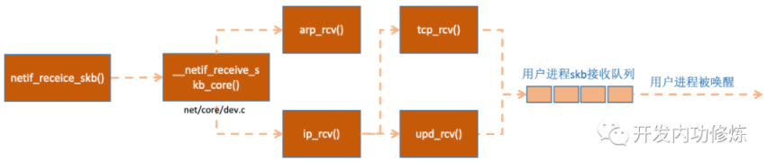
Receive Packet Steering (RPS)
Normally, a single CPU processes the hardware interrupt and polls for packets to process incoming data.
Receive Side Scaling (RSS): Some NICs support multiple queues at the hardware level. This means incoming packets can be hashed and DMA’d to a separate memory region for each queue, thus multiple CPUs will handle interrupts from the device and also process packets. This hash may be based on the IP address and TCP port numbers, so that packets from the same connection end up being processed by the same CPU.
Receive Packet Steering (RPS) is a software implementation of RSS. It is done here, after the packet is taken from poll loop and rx ring buffer.
RPS works by generating a hash for incoming data to determine which CPU should process the data. The data is then enqueued to the per-CPU receive network backlog to be processed. An Inter-processor Interrupt (IPI) is delivered to the CPU owning the backlog to kick-start backlog processing if it is not currently processing data. ie. netif_receive_skb() will either continue sending network data up the networking stack, or hand it over to RPS for processing on a different CPU.
For RPS to work, it must be enabled in the kernel configuration, and a bitmask describing which CPUs should process packets for a given interface and RX queue.
Receive Flow Steering (RFS)
Receive flow steering (RFS) is used in conjunction with RPS (must enable RPS first). Use RFS to help increase cache hit rates by directing packets for the same flow to the same CPU for processing. RFS keeps track of a global hash table of all flows.
Accelerated Receive Flow Steering: This achieves RFS in hardware, for NICs that support this functionality. It involves updating the NIC with flow information so that it can determine which CPU to interrupt.
enqueue_to_backlog
If RPS is enabled, netif_receive_skb() will call enqueue_to_backlog(). The function gets a pointer to the remote CPU’s softnet_data structure, which contains a pointer to the input_pkt_queue. The length of the remote input_pkt_queue is checked against net.core.netdev_max_backlog. If queue is full, the data is simply dropped.
The per-CPU backlog queue plugs into NAPI the same way a device driver does, the remote CPU’s NAPI poll worker structure is added to that CPU’s poll_list. An IPI is queued which will trigger the softIRQ kernel thread on the remote CPU to wake-up if it is not running already. When the ksoftirqd kernel thread on the remote CPU runs, the registered poll function is process_backlog, each piece of data on the backlog queue is removed from the backlog queue and passed on to __netif_receive_skb().
Parameters to tune:
net.core.netdev_max_backlog: Maximum number of packets can be put into backlog queue. help prevent drops in enqueue_to_backlog by increasing the netdev_max_backlog if you are using RPS or if your driver calls netif_rx.net.core.dev_weight: adjust the weight of the backlog’s NAPI poller. Maximum number of packets the driver can receive during a NAPI interrupt, per CPU.//file: net/core/dev.c
int netif_receive_skb(struct sk_buff *skb){
#ifdef CONFIG_RPS //RPS处理逻辑
cpu = get_rps_cpu(skb->dev, skb, &rflow); // determine CPU taking into account of RFS
if (cpu >= 0) {
ret = enqueue_to_backlog(skb, cpu, &rflow->last_qtail);
rcu_read_unlock();
return ret;
}
#endif
return __netif_receive_skb(skb);
}
static int __netif_receive_skb(struct sk_buff *skb) {
......
ret = __netif_receive_skb_core(skb, false);
}
static int __netif_receive_skb_core(struct sk_buff *skb, bool pfmemalloc) {
......
//pcap逻辑，这里会将数据送入抓包点。tcpdump就是从这个入口获取包的
list_for_each_entry_rcu(ptype, &ptype_all, list) {
if (!ptype->dev || ptype->dev == skb->dev) {
if (pt_prev)
ret = deliver_skb(skb, pt_prev, orig_dev);
pt_prev = ptype;
}
}
......
// 从数据包中取出协议信息，然后遍历注册在这个协议上的回调函数列表。
// ptype_base 是一个 hash table，在协议注册小节我们提到过。ip_rcv 函数地址就是存在这个 hash table中的。
list_for_each_entry_rcu(ptype,
&ptype_base[ntohs(type) & PTYPE_HASH_MASK], list) {
if (ptype->type == type &&
(ptype->dev == null_or_dev || ptype->dev == skb->dev ||
ptype->dev == orig_dev)) {
if (pt_prev)
ret = deliver_skb(skb, pt_prev, orig_dev);
pt_prev = ptype;
}
}
}
//file: net/core/dev.c
static inline int deliver_skb(struct sk_buff *skb,
struct packet_type *pt_prev,
struct net_device *orig_dev){
......
// pt_prev->func这一行就调用到了协议层注册的处理函数了。对于ip包来讲，就会进入到ip_rcv（比如是arp包的话，会进入到arp_rcv）
return pt_prev->func(skb, skb->dev, pt_prev, orig_dev);
}
Now go on to IP layer.
There are two netfilter hooks here:
//file: net/ipv4/ip_input.c
int ip_rcv(struct sk_buff *skb, struct net_device *dev, struct packet_type *pt, struct net_device *orig_dev){
......
// NF_HOOK是一个钩子函数，NF_HOOK 这个函数会执行 iptables 中 "PREROUTING" 里的各种表注册的各种规则。
// 当执行完注册的钩子后就会执行到最后一个参数指向的函数ip_rcv_finish。
// since routing is done inside ip_rcv_finish, this netfilter is called "PREROUTING"
return NF_HOOK(NFPROTO_IPV4, NF_INET_PRE_ROUTING, skb, dev, NULL,
ip_rcv_finish);
}
static int ip_rcv_finish(struct sk_buff *skb){
......
if (!skb_dst(skb)) {
// ip_route_input_noref calls ip_route_input_mc() to decide forwarding or local.
// If it is local, 函数ip_local_deliver被赋值给了dst.input
int err = ip_route_input_noref(skb, iph->daddr, iph->saddr,
iph->tos, skb->dev);
...
}
......
return dst_input(skb);
}
/* Input packet from network to transport. */
static inline int dst_input(struct sk_buff *skb){
// skb_dst(skb)->input调用的input方法就是路由子系统赋的ip_local_deliver。
return skb_dst(skb)->input(skb);
}
//file: net/ipv4/ip_input.c
int ip_local_deliver(struct sk_buff *skb){
/* Reassemble IP fragments. */
if (ip_is_fragment(ip_hdr(skb))) {
if (ip_defrag(skb, IP_DEFRAG_LOCAL_DELIVER))
return 0;
}
// 这里会执行 LOCAL_IN 钩子，这也就是我们说的netfilter INPUT 链
return NF_HOOK(NFPROTO_IPV4, NF_INET_LOCAL_IN, skb, skb->dev, NULL,
ip_local_deliver_finish);
}
static int ip_local_deliver_finish(struct sk_buff *skb){
......
int protocol = ip_hdr(skb)->protocol;
const struct net_protocol *ipprot;
// inet_protos中保存着tcp_rcv()和udp_rcv()的函数地址。这里将会根据包中的协议类型选择进行分发,在这里skb包将会进一步被派送到更上层的协议中，udp和tcp。
ipprot = rcu_dereference(inet_protos[protocol]);
if (ipprot != NULL) {
ret = ipprot->handler(skb);
}
}
Now go to UDP layer
//file: net/ipv4/udp.c
int udp_rcv(struct sk_buff *skb){
return __udp4_lib_rcv(skb, &udp_table, IPPROTO_UDP);
}
int __udp4_lib_rcv(struct sk_buff *skb, struct udp_table *udptable,
int proto){
// __udp4_lib_lookup_skb是根据skb来寻找对应的socket，当找到以后将数据包放到socket的缓存队列里。如果没有找到，则发送一个目标不可达的icmp包。
sk = __udp4_lib_lookup_skb(skb, uh->source, uh->dest, udptable);
if (sk != NULL) {
int ret = udp_queue_rcv_skb(sk, skb
}
icmp_send(skb, ICMP_DEST_UNREACH, ICMP_PORT_UNREACH, 0);
}
//file: net/ipv4/udp.c
int udp_queue_rcv_skb(struct sock *sk, struct sk_buff *skb){
......
// sk_rcvqueues_full接收队列如果满了的话，将直接把包丢弃。接收队列大小受内核参数net.core.rmem_max和net.core.rmem_default影响。
if (sk_rcvqueues_full(sk, skb, sk->sk_rcvbuf))
goto drop;
rc = 0;
ipv4_pktinfo_prepare(skb);
bh_lock_sock(sk);
//sock_owned_by_user判断的是用户是不是正在这个socker上进行系统调用（socket被占用），如果没有，那就可以直接放到socket的接收队列中。
if (!sock_owned_by_user(sk))
rc = __udp_queue_rcv_skb(sk, skb);
// 如果有，那就通过sk_add_backlog把数据包添加到backlog队列。当用户释放的socket的时候，内核会检查backlog队列，如果有数据再移动到接收队列中。
else if (sk_add_backlog(sk, skb, sk->sk_rcvbuf)) {
bh_unlock_sock(sk);
goto drop;
}
bh_unlock_sock(sk);
return rc;
}
假如是 tcp 的包的话就会执行到 tcp_v4_rcv 函数, It finds the right socket, and it goes to the tcp finite state machine.
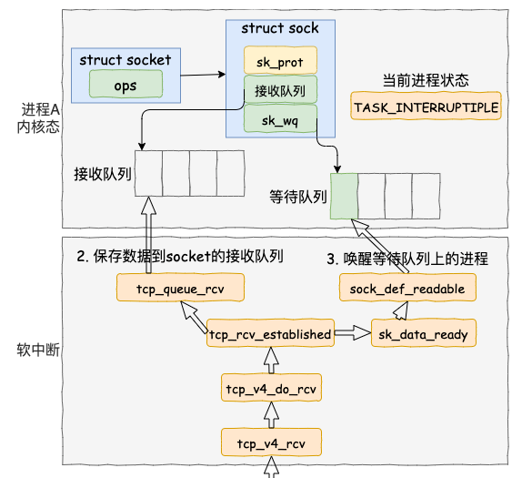
我们假设处理的是 ESTABLISH 状态下的包，这样就又进入 tcp_rcv_established 函数中进行处理。
//file: net/ipv4/tcp_input.c
int tcp_rcv_established(struct sock *sk, struct sk_buff *skb,
const struct tcphdr *th, unsigned int len)
{
......
//将接收数据放到 socket 的接收队列上。
eaten = tcp_queue_rcv(sk, skb, tcp_header_len, &fragstolen);
//数据 ready，唤醒 socket 上阻塞掉的进程
// 这又是一个函数指针。在创建 socket 执行到 sock_init_data 时，把 sk_data_ready 设置成 sock_def_readable，这是默认的数据就绪处理函数。
sk->sk_data_ready(sk, 0);
......
}
//file: net/ipv4/tcp_input.c
static int __must_check tcp_queue_rcv(struct sock *sk, struct sk_buff *skb, int hdrlen,
bool *fragstolen)
{
//把接收到的数据放到 socket 的接收队列的尾部
if (!eaten) {
__skb_queue_tail(&sk->sk_receive_queue, skb);
skb_set_owner_r(skb, sk);
}
return eaten;
}
//file: net/core/sock.c
static void sock_def_readable(struct sock *sk, int len)
{
struct socket_wq *wq;
rcu_read_lock();
wq = rcu_dereference(sk->sk_wq);
//有进程在此 socket 的等待队列
if (wq_has_sleeper(wq))
//唤醒等待队列上的进程
wake_up_interruptible_sync_poll(&wq->wait, POLLIN | POLLPRI |
POLLRDNORM | POLLRDBAND);
sk_wake_async(sk, SOCK_WAKE_WAITD, POLL_IN);
rcu_read_unlock();
}
//file: include/linux/wait.h
// 这里传入的1 是wake_up_common()的参数 nr_exclusive ，这里指的是即使是有多个进程都阻塞在同一个 socket 上，也只唤醒 1 个进程。其作用是为了避免惊群。
#define wake_up_interruptible_sync_poll(x, m) \
__wake_up_sync_key((x), TASK_INTERRUPTIBLE, 1, (void *) (m))
Ring Buffer位于NIC和IP层之间，是一个典型的FIFO（先进先出）环形队列。Ring Buffer没有包含数据本身，而是包含了指向sk_buff（socket kernel buffers）的描述符。
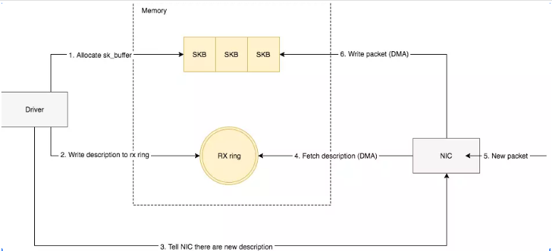
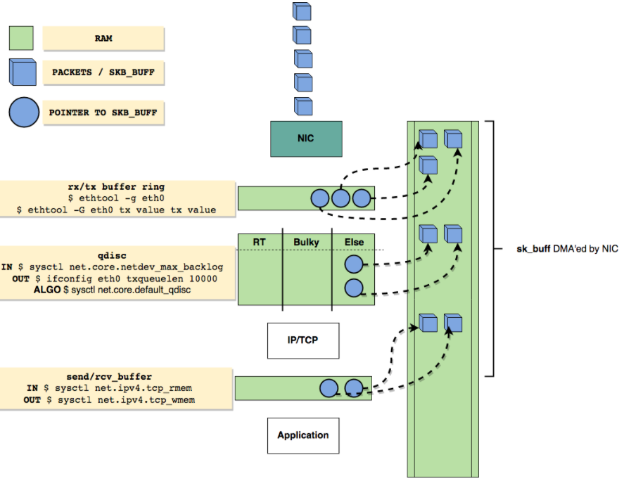
网卡多队列就是指的有多个RingBuffer，每个RingBufffer可以由一个core来处理
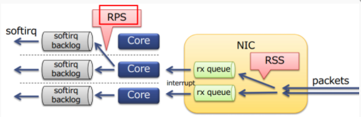
Refer to: https://mp.weixin.qq.com/s/wThfD9th9e_-YGHJJ3HXNQ
Overall Socket Send diagram
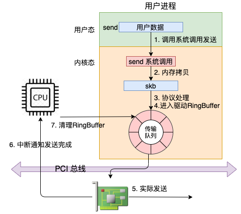
A bit more detailed diagram
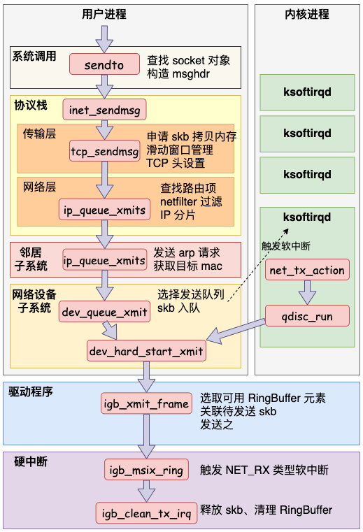
Send system call
send 系统调用的源码位于文件 net/socket.c 中。在这个系统调用里，内部其实真正使用的是 sendto 系统调用。整个调用链主要只干了两件简单的事情:
struct msghdr 对象，把用户传入的数据，比如 buffer地址、数据长度啥的，统统都装进去.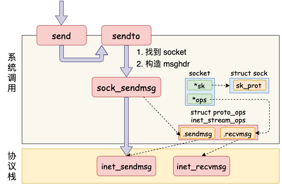
传输层处理 (mainly in file net/ipv4/tcp.c)
在进入到协议栈 inet_sendmsg 以后，内核接着会找到 socket 上的具体协议发送函数。对于 TCP 协议来说，那就是 tcp_sendmsg，
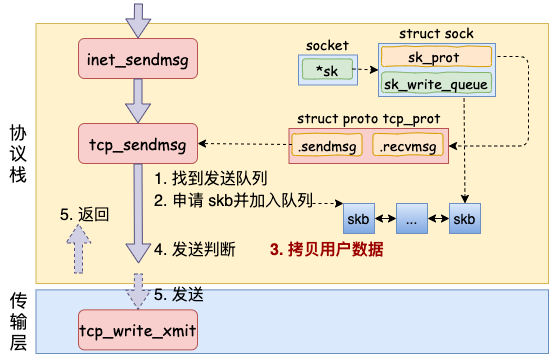
在这个函数中，内核会申请一个内核态的 skb 内存，将用户待发送的数据拷贝进去（第一次copy）。
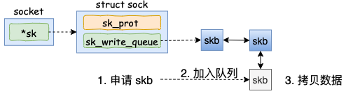
至于内核什么时候真正把 skb 发送出去。在 tcp_sendmsg 中会进行一些判断。只有满足 forced_push(tp) (未发送的数据数据是否已经超过最大窗口的一半了。) 或者 skb == tcp_send_head(sk) 成立的时候，内核才会真正启动发送数据包。
传输层发送 (mainly in file net/ipv4/tcp_output.c)
假设现在内核发送条件已经满足了，最终都实际会执行到 tcp_write_xmit()。这个函数处理了传输层的拥塞控制、滑动窗口相关的工作。
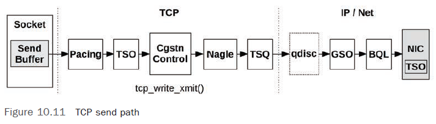
Some of these components include:
当满足窗口要求的时候，会调用tcp_transmit_skb。
tcp_transmit_skb()
tcp_transmit_skb 是发送数据位于传输层的最后一步，接下来就可以进入到网络层进行下一层的操作了。调用了网络层提供的发送接口icsk->icsk_af_ops->queue_xmit(), queue_xmit 其实指向的是 ip_queue_xmit 函数。网络层发送处理 (mainly in file net/ipv4/ip_output.c)
在网络层里主要处理以下几项工作，处理完这些工作后会交给更下层的邻居子系统来处理。
ip_local_out() => __ip_local_out() => nf_hook() 会执行 netfilter 过滤。这里是netfilter的NF_INET_LOCAL_OUT (OUTPUT链) 链。如果你使用 iptables 配置了一些规则，那么这里将检测是否命中规则。如果你设置了非常复杂的 netfilter 规则，在这个函数这里将会导致你的进程 CPU 开销会极大增加。route -n命令可以看到你本机的路由配置。在路由表中，可以查到某个目的网络应该通过哪个 Iface（网卡），哪个 Gateway（网卡）发送出去。查找出来以后缓存到 socket 上，下次再发送数据就不用查了。
dst_output() 找到到这个 skb 的路由表（dst 条目） ，然后调用路由表的 output 方法。这又是一个函数指针，指向的是 ip_output() 方法。在 ip_output() 中再次执行 netfilter 过滤, 这里是netfilters的POSTROUTING链。ip_finish_output()，如果数据大于 MTU 的话，是会执行分片的 （需要分片的话会有第三次copy）。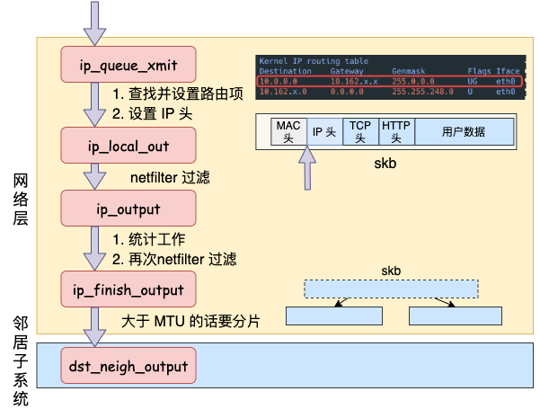
邻居子系统
邻居子系统是位于网络层和数据链路层中间的一个系统，其作用是对网络层提供一个封装，让网络层不必关心下层的地址信息，让下层来决定发送到哪个 MAC 地址。邻居子系统并不位于协议栈 net/ipv4/ 目录内，而是位于 net/core/neighbour.c。因为无论是对于 IPv4 还是 IPv6 ，都需要使用该模块。
在邻居子系统里主要是查找或者创建邻居项，在创造邻居项的时候，有可能会发出实际的 arp 请求。然后封装一下 MAC 头，将发送过程再传递到更下层的网络设备子系统。
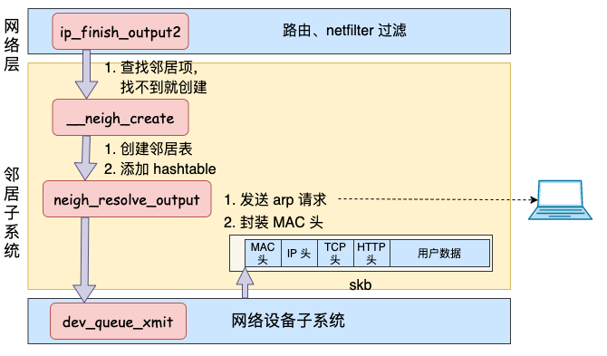
网络设备子系统
邻居子系统通过 dev_queue_xmit 进入到网络设备子系统中来。
qdisc
Linux supports a feature called traffic control. The traffic control system contains several different sets of queuing systems that provide different features for controlling traffic flow. Each queuing system is called qdisc and also known as queuing disciplines. You can think of qdiscs as schedulers; qdiscs decide when and how packets are transmit.
tc qdisc.Parameters to tune:
net.core.dev_weight: adjust the weight of __qdisc_run loop which will cause more calls to __netif_schedule to be executed. The result will be the current qdisc added to the output_queue list for the current CPU more times, which should result in additional processing of transmit packets.txqueuelen: You can adjust this parameter to increase the number of bytes that may be queued by a qdisc. It can be viewed by ifconfig; and changed by $ sudo ifconfig eth0 txqueuelen 10000 网卡是有多个发送队列的, netdev_pick_tx() 函数的调用就是选择一个队列进行发送。netdev_pick_tx 发送队列的选择受 XPS(Transmit Packet Steering) 等配置的影响，而且还有缓存，也是一套小复杂的逻辑。
XPS: Transmit Packet Steering: For NICs with multiple transmit queues, this supports transmission by multiple CPUs to the queues.
先调用 q->enqueue 把 skb 添加到队列里。然后调用 __qdisc_run 开始发送。在__qdisc_run中，我们看到 while 循环不断地从队列中取出 skb 并进行发送。注意，这个时候其实都占用的是用户进程的系统态时间(sy)。只有当 quota 用尽或者其它进程需要 CPU 的时候才触发 NET_TX_SOFTIRQ 软中断进行发送。
这就是为什么一般服务器上查看
/proc/softirqs，一般NET_RX都要比NET_TX大的多的另外一个原因。对于read来说，都是要经过NET_RX软中断，而对于send来说，只有系统态配额用尽才让软中断上。
loopback的处理
对于loopback来说（q->enqueue 判断为 false），就没有队列的问题，直接进入 dev_hard_start_xmit。接着进入回环设备的虚拟“驱动”（drivers/net/loopback.c）里的发送回调函数 loopback_xmit，将 skb “发送”出去。
enqueue_to_backlog 把要发送的 skb 插入 softnet_data->input_pkt_queue 队列中并调用 ____napi_schedule 来触发软中断。接收方在软中断里取出这个skb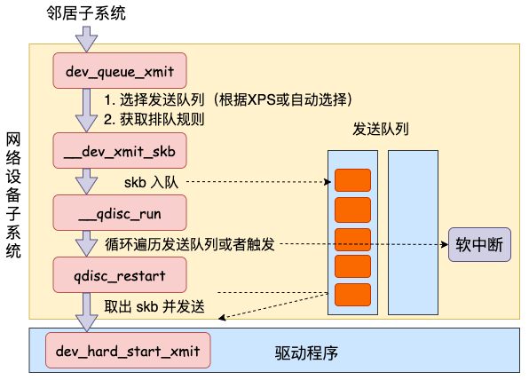
软中断调度
如果系统态 CPU 发送网络包不够用的时候，会调用 __netif_schedule 触发一个软中断，由它来实际发出 NET_TX_SOFTIRQ 类型软中断。the __netif_schedule function will add the qdisc to the softnet_data’s output queue for processing.
软中断是由内核线程来运行的，该线程会进入到 net_tx_action 函数，在该函数中能获取到发送队列，并也最终调用到驱动程序里的入口函数 dev_hard_start_xmit。
注意：这里发送数据消耗的 CPU 就都显示在 si 这里了，不会消耗用户进程的系统时间了。
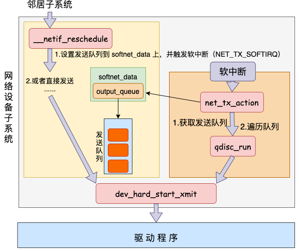
igb 网卡驱动发送
前面看到，无论是对于用户进程的内核态，还是对于软中断上下文，都会调用到网络设备子系统中的 dev_hard_start_xmit 函数。这个函数主要包括步骤：
netif_needs_gso() is used to determine whether or not an skb itself needs segmentation at all.在这个函数中，会调用到驱动里的发送函数 igb_xmit_frame。在驱动函数里，将 skb 会挂到 RingBuffer上，驱动调用完毕后，数据包将真正从网卡发送出去。
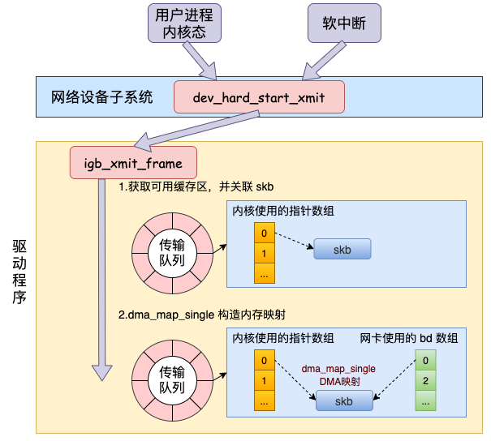
发送完成硬中断
当数据发送完成以后，工作并没有结束。因为内存还没有清理。当发送完成的时候，网卡设备会触发一个硬中断来释放内存。
这里有个很有意思的细节，depending on the device, 无论硬中断是因为是有数据要接收，还是说发送完成通知，从硬中断触发的软中断都是
NET_RX_SOFTIRQ。这个我们在第一节说过了，这是软中断统计中 RX 要高于 TX 的另一个主要原因。
Another implication: the NET_RX softirq runs to process both incoming packets and transmit completions. Since both operations share the same IRQ, only a single IRQ handler function can be registered and it must deal with both possible cases. In igb driver, the function does that is igb_poll(), it processes TX completions before processing incoming data. Since the entire NAPI poll loop runs within a hard coded time slice, high load of TX completions may eat more of the time slice than receiving data.
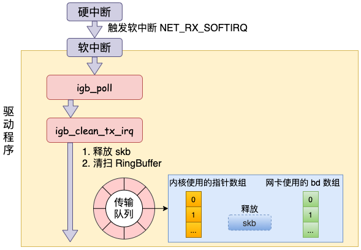
Refer to: https://mp.weixin.qq.com/s/C-Eeoeh9GHxugF4J30fz1A
客户端建立连接前需要确定一个端口，该端口会在两个位置进行确定。
第一个位置，也是最主要的确定时机是 connect 系统调用执行过程。在 connect 的时候，会随机地从 ip_local_port_range 选择一个位置开始循环判断。找到可用端口后，发出 syn 握手包。
net.ipv4.ip_local_port_range 参数(默认值是 32768 - 61000)，是不是可以再放的多一些。第二个位置，如果在 connect 之前使用了 bind，将会使得 connect 时的端口选择方式无效。转而使用 bind 时确定的端口。bind 时如果传入了端口号，会尝试首先使用该端口号，如果传入了 0 ，也会自动选择一个。但默认情况下一个端口只会被使用一次。所以对于客户端角色的 socket，不建议使用 bind 。
//file: net/socket.c
SYSCALL_DEFINE3(connect, int, fd, struct sockaddr __user *, uservaddr,
int, addrlen)
{
struct socket *sock;
//根据用户 fd 查找内核中的 socket 对象
sock = sockfd_lookup_light(fd, &err, &fput_needed);
//进行 connect
// sock->ops->connect 其实调用的是 inet_stream_connect 函数。
err = sock->ops->connect(sock, (struct sockaddr *)&address, addrlen,
sock->file->f_flags);
...
}
//file: ipv4/af_inet.c
int __inet_stream_connect(struct socket *sock, ...)
{
struct sock *sk = sock->sk;
switch (sock->state) {
case SS_UNCONNECTED:
// sk->sk_prot->connect 实际上对应的是 tcp_v4_connect 方法。
err = sk->sk_prot->connect(sk, uaddr, addr_len);
sock->state = SS_CONNECTING;
break;
}
...
}
//file: net/ipv4/tcp_ipv4.c
int tcp_v4_connect(struct sock *sk, struct sockaddr *uaddr, int addr_len)
{
//设置 socket 状态为 TCP_SYN_SENT
tcp_set_state(sk, TCP_SYN_SENT);
//动态选择一个端口
err = inet_hash_connect(&tcp_death_row, sk);
//函数用来根据 sk 中的信息，构建一个完成的 syn 报文，并将它发送出去。
err = tcp_connect(sk);
}
//file:net/ipv4/inet_hashtables.c
int inet_hash_connect(struct inet_timewait_death_row *death_row,
struct sock *sk)
{
return __inet_hash_connect(death_row, sk, inet_sk_port_offset(sk),
__inet_check_established, __inet_hash_nolisten);
}
//file:net/ipv4/tcp_output.c
int tcp_connect(struct sock *sk)
{
//申请并设置 skb
buff = alloc_skb_fclone(MAX_TCP_HEADER + 15, sk->sk_allocation);
tcp_init_nondata_skb(buff, tp->write_seq++, TCPHDR_SYN);
//添加到发送队列 sk_write_queue 上
tcp_connect_queue_skb(sk, buff);
//实际发出 syn
err = tp->fastopen_req ? tcp_send_syn_data(sk, buff) :
tcp_transmit_skb(sk, buff, 1, sk->sk_allocation);
//启动重传定时器
inet_csk_reset_xmit_timer(sk, ICSK_TIME_RETRANS,
inet_csk(sk)->icsk_rto, TCP_RTO_MAX);
}
确定端口Work done in __inet_hash_connect():
inet_sk(sk)->inet_num，如果我们调用过 bind，那么这个函数会选择好端口并设置在 inet_num 上inet_get_local_port_range()读取 net.ipv4.ip_local_port_rangenet.ipv4.ip_local_reserved_ports 内hinfo->bhash。如果在哈希表中没有找到，那么说明这个端口是可用的。
-EADDRNOTAVAIL （errno 99， “Cannot assign requested address”）,Refer to: https://mp.weixin.qq.com/s/hv2tmtVpxhVxr6X-RNWBsQ
iptables is a command line utility to configure the IP packet filter rules of the Linux kernel firewall, implemented as different Netfilter modules.
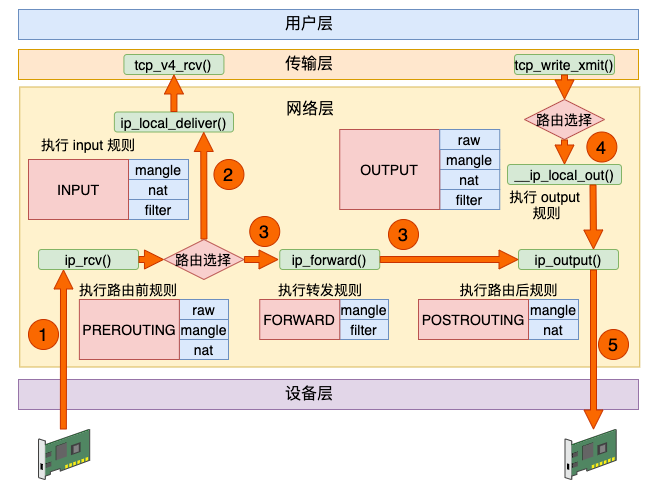
数据接收过程走的是 1 和 2，发送过程走的是 4 、5，转发过程是 1、3、5。有了这张图，我们能更清楚地理解 iptables 和内核的关系。
每一个链(chain)上都可能是由许多个规则(rule)组成的。在 NF_HOOK 执行到这个链的时候，就会把规则按照优先级挨个过一遍。这些规则根据用途的不同，又可以raw、mangle、nat 和 filter。
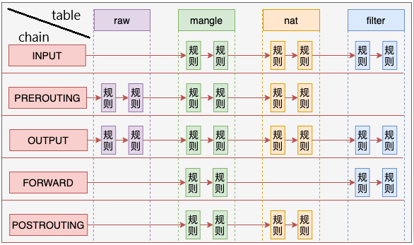
在 Linux 内核中，对于发送过程和接收过程都会涉及路由选择，其中接收过程的路由选择是为了判断是该本地接收还是将它转发出去。
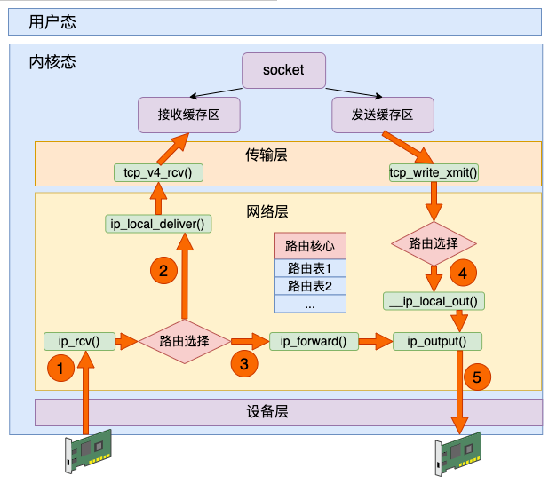
默认有 local 和 main 两个路由表，不过如果安装的 linux 开启了 CONFIG_IP_MULTIPLE_TABLES 选项的话，最多能支持 255 张路由表。
查看某个路由表的配置，通过使用 ip route list table {表名} 来查看。
#ip route list table local
local 10.143.x.y dev eth0 proto kernel scope host src 10.143.x.y
local 127.0.0.1 dev lo proto kernel scope host src 127.0.0.1
如果是查看 main 路由表，也可以直接使用 route 命令
# route -n
Kernel IP routing table
Destination Gateway Genmask Flags Metric Ref Use Iface
10.0.0.0 10.*.*.254 255.0.0.0 UG 0 0 0 eth0
10.*.*.0 0.0.0.0 255.255.248.0 U 0 0 0 eth0
sample select sample
int fds[] = ...// 存放需要监听的socket
fd_set read_fds, temp_read_fds;
FD_ZERO(&read_fds);
for(int i = 0; i < fds.count; ++i) {
FD_SET(fds[i], &read_fds);
}
while(1){
// kernel uses fd_set as output parameter, this is to reset the input parameter
temp_read_fds = read_fds;
int n = select(..., temp_read_fds, ...)
for(int i=0; i < fds.count; i++){
if(FD_ISSET(fds[i], &temp_read_fds)){
//fds[i]的数据处理
}
}
}
sample epoll usage:
int epfd = epoll_create(...);
epoll_ctl(epfd, EPOLL_CTL_ADD, ...); //将所有需要监听的socket添加到epfd中
while(1){
int n = epoll_wait(...)
for(接收到数据的socket){
//处理
}
}
Good article about how epoll works (and details about file descriptor (per process), file description (in kernel), inode relationship) https://copyconstruct.medium.com/the-method-to-epolls-madness-d9d2d6378642
// include/uapi/linux/posix_types.h
#define __FD_SETSIZE 1024
typedef struct {
unsigned long fds_bits[__FD_SETSIZE / (8 * sizeof(long))];
} __kernel_fd_set;
History
struct eventpoll对象，因为内核要维护“就绪列表”等数据，“就绪列表”可以作为eventpoll的成员。epoll_ctl添加或删除所要监听的socket。如下图，epoll_ctl添加sock1、sock2和sock3的监视，内核会将eventpoll fd添加到这三个socket的等待队列中。epoll_wait时，内核会将进程A放入eventpoll的等待队列中，阻塞进程。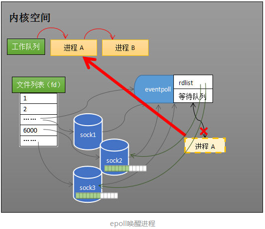
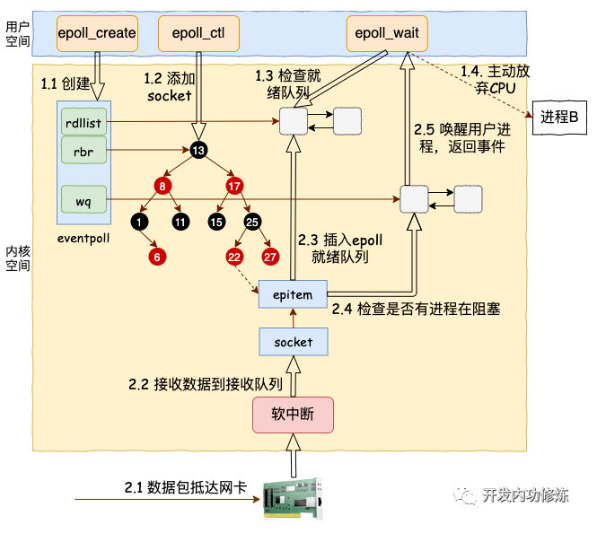
struct eventpoll is defiend in fs/eventpoll.c, 包含了wq（等待队列），rdlist(就绪列表)，rbr(维护监视队列)等成员。
// file：fs/eventpoll.c
struct eventpoll {
//等待队列链表。软中断数据就绪的时候会通过 wq 来找到阻塞在 epoll 对象上的用户进程。
wait_queue_head_t wq;
/*
就绪的描述符的链表。当有的连接就绪的时候，内核会把就绪的连接放到 rdllist 链表里。这样应用进程只需要判断链表就能找出就绪进程，而不用去遍历整棵树。
- rdlist应能够快速的插入数据。程序可能随时调用epoll_ctl添加或删除socket，当删除时，若该socket已经存放在就绪列表中，它也应该被移除。所以就绪列表应是一种能够快速插入和删除的数据结构。epoll使用双向链表来实现就绪队列。
- rdlist并非直接引用socket，而是通过epitem间接引用，红黑树的节点也是epitem对象。
*/
struct list_head rdllist;
//通过红黑树树来管理用户进程下添加进来的所有 socket 连接。需要方便的添加和移除，还要便于搜索，以避免重复添加，所以使用红黑树作为索引结构
struct rb_root rbr;
......
}
epoll_ctl 添加 socket
在使用 epoll_ctl 注册每一个 socket 的时候(defined in SYSCALL_DEFINE4(epoll_ctl) in fs/eventpoll.c)，内核会主要做如下三件事情：
kmem_cache_alloc），并对其做一些初始化。ep_poll_callback。数据来了的时候软中断将数据收到 socket 的接收队列后，会通过注册的这个 ep_poll_callback 函数来回调，进而通知到 epoll 对象。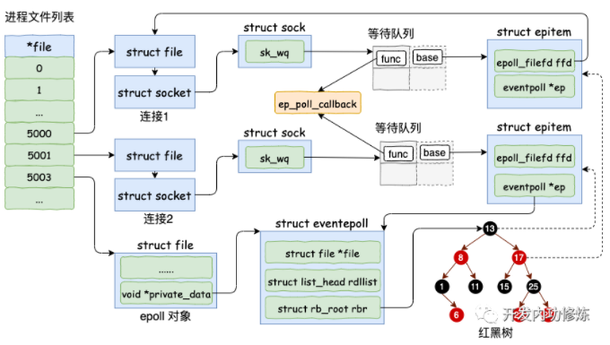
epoll_wait 等待接收
eventpoll->rdllist 链表里有数据就返回default_wake_function。其 private 是 current （当前进程）), 并且将其添加到 eventpoll 的等待队列上，然后把自己阻塞掉就完事。
epoll_wait的等待队列项是挂在 epoll 对象上的，而epoll_ctl 添加 socket 时也创建了等待队列项则是挂在 socket 对象上的。数据来啦
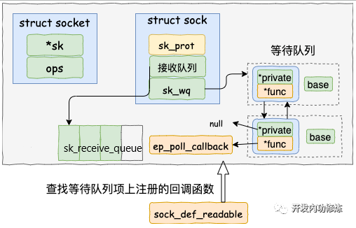
net/ipv4/tcp_input.c)
tcp_v4_rcv()->tcp_v4_do_rcv()->tcp_rcv_established()->tcp_queue_rcv(), skb is enqueued into sock->sk_receive_queue.sk_data_ready 来唤醒在 socket上等待的用户进程。这又是一个函数指针, 内核将以 sock_def_readable 这个函数为入口，找到 epoll_ctl 添加 socket 时在其上设置的回调函数 ep_poll_callback。ep_poll_callback 根据等待任务队列项上的额外的 base 指针可以找到 epitem， 进而也可以找到 eventpoll对象。
epoll_wait。在default_wake_function (epoll_wait时传入的)中找到等待队列项里的进程描述符（epoll_wait时传入的current进程），然后调用try_to_wake_up唤醒之。